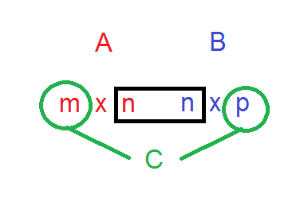
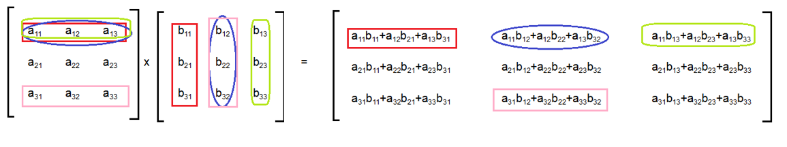

Matriisitulo
Contents
Matriisitulo#
Matriisien tavallista kertolaskua kutsutaan matriisituloksi. Kahden matriisin tulosta muodostuu uusi matriisi. Se ei välttämättä ole samaa tyyppiä kuin kumpikaan kertolaskussa mukana olevista matriiseista.
Keskenään kerrottavien matriisien ei tarvitse olla samaa tyyppiä keskenään. On kuitenkin tärkeä sääntö: matriisien \(A\) ja \(B\) kertolasku eli matriisitulo \(AB\) voidaan laskea vain, jos matriisi \(A\) on tyyppiä \(m \times n\) ja matriisi \(B\) tyyppiä \(n \times p\).
Matriisin \(A\) sarakkeiden määrän on siis oltava yhtä suuri kuin matriisin \(B\) rivien määrän. Kertolaskun tuloksena on matriisi \(C=AB\), jonka tyyppi on \(m \times p\). Ennen kuin alkaa laskea matriisituloa, kannattaa tarkistaa matriisien tyypin seuraavan kuvan mukaisesti. Kirjoitetaan matriisien \(A\) ja \(B\) tyypit vierekkäin vastaavien matriisien nimien alle. Jos kaksi keskimmäistä lukua ovat samat, kertolasku on mahdollinen. Tuloksena muodostuvan matriisin tyypin näkee kahdesta reunimmaisesta luvusta.

Matriisin \(C=AB\) alkio \(c_{ij}\) saadaan kertomalla matriisin \(A\) rivin \(i\) alkiot matriisin \(B\) sarakkeen \(j\) alkioilla ja laskemalla tulojen summa. Tämän muistamista voi helpottaa se, että matriisin rivejä ja sarakkeita voidaan ajatella vektoreina. Tällöin rivin ja sarakkeen alkioiden kerto- ja yhteenlaskuja sisältävä laskutoimitus on täsmälleen sama kuin vektorien pistetulo.
Laskun periaate on esitetty seuraavassa kuvassa. Esimerkkiksi matriisin \(C\) sinisellä reunustettu alkio, eli 1. rivin ja 2. sarakkeen alkio, saadaan laskemalla pistetulo matriisin \(A\) 1. rivistä ja matriisin \(B\) 2. sarakkeesta.

Octavella matriisitulo lasketaan kertomerkillä, lasku \(AB\) suoritetaan siis komennolla A*B. WolframAlphassakin kertolasku onnistuu samalla * -merkillä.
Esimerkki
Laske tulot \(AB\) ja \(BA\), kun \(A=\begin{bmatrix}2&3&1\\0&4&2\end{bmatrix}\) ja \(B=\begin{bmatrix}0&2&1\\3&1&2\\1&0&2\end{bmatrix}\).
Ratkaisu
Aluksi kannattaa tarkistaa, onhan lasku mahdollinen, ja millainen lopputulos on odotettavissa. Matriisi \(A\) on tyyppiä \(2\times3\) ja matriisi \(B\) on tyyppiä \(3 \times 3\), joten \(AB\) matriisi voidaan laskea. Lopputuloksen tyypin pitäisi olla \(2 \times 3\).
\(AB=\begin{bmatrix}2\cdot 0+3\cdot 3+1\cdot 1 & 2\cdot 2+3\cdot 1+1\cdot 0 & 2\cdot 1+3\cdot 2+1\cdot 2 \\ 0\cdot 0+4\cdot 3+2\cdot 1 & 0\cdot 2+4\cdot 1+2\cdot 0 & 0\cdot 1+4\cdot 2+2\cdot 2\end{bmatrix} \)
\(AB=\begin{bmatrix}10&7&10\\14&4&12\end{bmatrix}\)
Matriisin \(BA\) lasku ei ole mahdollinen: matriisissä \(B\) on 3 saraketta, mutta matriisissa \(A\) on vain 2 riviä. Tällöin kaikille luvuille ei löydy pistetuloihin vastinparia. Octavessa tällainen lasku tuottaisi virheilmoituksen, jossa kerrotaan, etteivät matriisit ole keskenään yhteensopivia (nonconformant arguments). Lasku \(BA^T\) kyllä onnistuu!
Matriisitulossa tulokseksi muodostuvan matriisin tyyppi riippuu siitä, missä järjestyksessä kertolasku lasketaan. Pistetuloja laskettaessa on mahdollista, että laskutoimitus koostuu yhdestä ainoasta kertolaskusta. Toisaalta on myös mahdollista saada tulokseksi matriisi, jossa on vain yksi alkio.
Lisäksi vaikka matriisit olisivat samaa tyyppiä, niin lopputulos riippuu laskujärjestyksestä. Reaalilukujen kertolaskun vaihdannaisuus (esimerkiksi 2 kertaa 5 on lukuarvoltaan yhtä suuri kuin 5 kertaa 2) ei siis yleensä päde matriiseille! Laskusääntönä tämä kirjoitetaan \(AB \neq BA\). Erikoistapauksia kyllä on, ja niitä käsitellään myöhemmin.
Esimerkki
Laske matriisitulot \(AB\) ja \(BA\), kun
a) \(A=\begin{bmatrix}1 & 2 & 3\end{bmatrix}\) ja \(B=\begin{bmatrix}4\\5\\6\end{bmatrix}\)
b) \(A=\begin{bmatrix}1 & 2 \\ 3 & 4\end{bmatrix}\) ja \(B=\begin{bmatrix}5 & 6 \\ 7 & 8\end{bmatrix}\)
Ratkaisu
a)
\(AB = \begin{bmatrix}1 & 2 & 3\end{bmatrix}\begin{bmatrix}4\\5\\6\end{bmatrix}=\begin{bmatrix}1\cdot 4 + 2\cdot 5+ 3\cdot 6\end{bmatrix}=\begin{bmatrix}4+10+18\end{bmatrix}=\begin{bmatrix}32\end{bmatrix}\)
\(BA=\begin{bmatrix}4\\5\\6\end{bmatrix}\begin{bmatrix}1 & 2 & 3\end{bmatrix}=\begin{bmatrix}4\cdot 1 & 4 \cdot 2 & 4 \cdot 3 \\ 5\cdot 1 & 5\cdot 2 & 5\cdot 3\\ 6\cdot 1 & 6 \cdot 2 & 6\cdot 3\end{bmatrix}=\begin{bmatrix}4 & 8 & 12 \\ 5 & 10 & 15 \\ 6 & 12 & 18\end{bmatrix}\)
b)
\(AB=\begin{bmatrix}1 & 2 \\ 3 & 4\end{bmatrix}\begin{bmatrix}5 & 6 \\ 7 & 8\end{bmatrix}=\begin{bmatrix}1\cdot 5 +2\cdot 7 & 1\cdot 6 + 2\cdot 8 \\ 3\cdot 5 + 4 \cdot 7 & 3\cdot 6 + 4\cdot 8\end{bmatrix}=\begin{bmatrix}19 & 22\\43 & 50\end{bmatrix}\)
\(BA=\begin{bmatrix}5 & 6 \\ 7 & 8\end{bmatrix}\begin{bmatrix}1 & 2 \\ 3 & 4\end{bmatrix}=\begin{bmatrix}5\cdot 1 + 6\cdot 3 & 5\cdot 2 + 6\cdot 4 \\ 7\cdot 1+8\cdot 3 & 7\cdot 2 + 8\cdot 4\end{bmatrix}=\begin{bmatrix}23 & 34 \\ 31 & 46\end{bmatrix}\)
Esimerkki
Ratkaise luku \(x\), kun \(A=\begin{bmatrix}1 & 2 \\ x & 0\end{bmatrix}\), \(B=\begin{bmatrix}x\\3\end{bmatrix}\), ja matriisin \(AB\) ensimmäisen rivin ja ensimmäisen sarakkeen alkio on \(10\). Mikä on tällöin matriisin \(AB\) puuttuva alkio?
Ratkaisu
Lasketaan matriisitulo \(AB\):
\(AB=\begin{bmatrix}1 & 2 \\ x & 0\end{bmatrix}\begin{bmatrix}x\\3\end{bmatrix}=\begin{bmatrix}1\cdot x + 2 \cdot 3 \\ x\cdot x + 0 \cdot 3\end{bmatrix}=\begin{bmatrix}x+6\\x^2\end{bmatrix}\)
Tulee olla \(x+6=10\), joten kysytty luku on \(x=4\). Matriisin \(AB\) toiseksi alkioksi tulee \(4^2=16\).
Matriisitulossa lasketaan kerralla monta kerto- ja yhteenlaskua. Se on siis tehokas tapa laskea esimerkiksi kokonaiskustannuksia. Yksinkertaisen ongelman, kuten seuraavan esimerkiki, toki ratkaisee helpommin ilman matriiseja kuin matriiseja hyödyntämällä. Jos kuitenkin esimerkiksi tarvittavia raaka-aineita ja niiden mahdollisia ostopaikkoja olisi kymmeniä tai satoja, ongelma olisi mukavampaa antaa tietokoneen ratkaistavaksi matriisimuodossa.
Esimerkki
Artun kaupassa maito maksaa 1 €/litra, vehnäjauhot 0.60 €/kg ja munat 2.50 €/kenno. Bertan kaupassa maito maksaa 1.29 €/litra, vehnäjauhot 0.35 €/kg ja munat 2.19 €/kenno. Kummasta kaupasta on halvempaa ostaa ainekset lettutaikinaan, johon tulee 2 litraa maitoa, 0.4 kg jauhoja ja puoli kennoa munia? Muotoile ongelma matriisien kertolaskuksi!
Ratkaisu
Muodostetaan matriisi \(H\) tuotteiden hinnoille eri kaupoissa. Ensimmäinen rivi kuvaa maidon, jauhojen ja munien hintaa Artun kaupassa. Toinen rivi kuvaa maidon, jauhojen ja munien hintaa Bertan kaupassa.
\(H=\begin{bmatrix}1 &0.60 &2.50 \\ 1.29 &0.35 &2.19\end{bmatrix}\)
Muodostetaan matriisi \(K\) tuotteiden kulutuksille lettutaikinassa. Alkiot vastaavat maidon, jauhojen ja munien kulutusta (yksiköinä litra, kilogramma ja kenno).
\(K=\begin{bmatrix}2 \\ 0.4 \\0.5\end{bmatrix}\)
Lasketaan matriisi \(HK\). Matriisin \(H\) tyyppi on \(2 \times 3\) ja matriisin \(K\) tyyppi on \(3 \times 1\), joten matriisitulo \(HK\) voidaan laskea, ja tuloksena olevan matriisin tyyppi on \(2 \times 1\). Matriisit alkiot kuvaavat taikinan aineksien hintaa: ylärivilla hinta Artun kaupasta ostettuna, ja alarivillä hinta Bertan kaupasta ostettuna.
\(HK=\begin{bmatrix}1\cdot2+0.60\cdot0.4+2.50\cdot0.5\\ 1.29\cdot 2+0.35\cdot 0.4+2.19\cdot 0.5\end{bmatrix} \)
\(HK =\begin{bmatrix}2+0.24+1.25 \\2.58+0.14+1.095\end{bmatrix}=\begin{bmatrix} 3.49 \\ 3.815\end{bmatrix}\).
Mistä edellisessä esimerkissä tiedettiin, mihin muotoon luvut pitää järjestää matriiseihin? Ainakin etukäteen oli tiedossa, että tulokseksi halutaan matriisi, jossa on 2 lukua, eli tuotteiden yhteishinta eri kaupoissa. Laskun tulos oli tyypin \(2 \times 1\) matriisi. Tällainen saatiin aikaan, kun kertolaskussa ensimmäinen matriisi oli tyyppiä \(2 \times 3\) ja toinen oli tyyppiä \(3 \times 1\).
Ei ole mitään “ulkoa opeteltavaa” sääntöä sille, miten sanalliset ongelmat muutetaan matriisilaskuiksi. Ongelman muotoilu laskuksi vaatii samanlaista ajattelua kuin yhtälöiden muodostaminen sanallisista tehtävistä muutenkin. Matriisitulossa matriisien tyypit voivat auttaa hahmottamaan ongelman rakennetta.
Edellisen esimerkiksi voi ratkaista niinkin, että muodostaa kertolaskuun matriisit, jotka ovat tyyppiä \(1\times 3\) ja \(3 \times 2\). Tällöin kertolasku tulos on tyyppiä \(1 \times 2\). Lopputuloksena ovat siis samat luvut kuin äsken, mutta vierekkäin eikä allekkain esitettynä. Kokeile vaikka!
Matriisitulon laskusääntöjä#
Jos matriisit \(A\), \(B\) ja \(C\) ovat keskenään sopivan kokoisia, niin niille ja reaaliluvulle \(p\) pätevät seuraavat laskusäännöt:
\((AB)C=A(BC)\)
\(A(B+C)=AB+BC\)
\((A+B)C=AC+BC\)
\(p(AB)=(pA)B=A(pB)\)
\((AB)^T=B^TA^T\)
\((B^TA^T)^T=AB\)
Osa laskusäännöistä näyttää hyvin samanlaisilta kuin reaalilukujen laskusäännöt, esimerkiksi osittelulaki. Alla on perusteltu eräs laskusäännöistä. Muiden laskusääntöjen perustelu tapahtuisi samalla tavalla, eli kirjoittamalla sääntöjen vasen ja oikea puoli auki mielivaltaisilla matriiseilla ja toteamalla lopuksi, että tuloksena olevien matriisien vastinalkiot ovat samat.
Säännön \((AB)^T=B^TA^T\) perustelu
Kirjoitetaan mielivaltaiset matriisit \(A\) ja \(B\), jotka ovat tyyppiä \(m \times n\) ja \(n \times p\), seuraavasti:
\(A=\begin{bmatrix}a_{11} & a_{12} & \dots & a_{1n} \\ a_{21} & a_{22} & \dots & a_{2n} \\ \vdots & \vdots & \ddots & \vdots \\ a_{m1} & a_{m2} & \dots & a_{mn}\end{bmatrix}\), \(B=\begin{bmatrix}b_{11} & b_{12} & \dots & b_{1p} \\ b_{21} & b_{22} & \dots & b_{2p} \\ \vdots & \vdots & \ddots & \vdots \\ b_{n1} & b_{n2} & \dots & b_{np}\end{bmatrix}\)
Matriisitulon lasku näillä merkinnöillä on pitkä. Kirjoitetaan näkyviin vain muutamia alkioita ja jätetään muiden paikalle kolme pistettä merkiksi siitä, että laskut niillä paikoilla tapahtuisivat samalla periaatteella.
\(\begin{equation}\begin{split}AB &=\begin{bmatrix}a_{11}b_{11}+\dots + a_{1n}b_{n1} & \dots & a_{11}b_{1p}+ \dots + a_{1n}b_{np}\\ \vdots & \ddots & \vdots \\ a_{m1}b_{11}+\dots a_{mn}b_{n1} & \dots & a_{m1}b_{1p} + \dots a_{mn}b_{np}\end{bmatrix}\end{split}\end{equation}\\\)
Muodostetaan seuraavaksi tämän matriisin transpoosi \((AB)^T\):
\((AB)^T = \begin{bmatrix}a_{11}b_{11}+\dots + a_{1n}b_{n1} & \dots & a_{m1}b_{11}+\dots a_{mn}b_{n1}\\ \vdots & \ddots & \vdots \\ a_{11}b_{1p}+ \dots + a_{1n}b_{np} & \dots & a_{m1}b_{1p} + \dots a_{mn}b_{np}\end{bmatrix}\)
Seuraavaksi pitää kirjoittaa auki yhtälön oikea puoli. Tarvittavat matriisien transpoosit ovat
\(A^T=\begin{bmatrix}a_{11} & a_{21} & \dots & a_{m1} \\ a_{12} & a_{22} & \dots & a_{m2} \\ \vdots & \vdots & \ddots & \vdots \\ a_{1n} & a_{2n} & \dots & a_{mn}\end{bmatrix}\), \(B^T=\begin{bmatrix}b_{11} & b_{21} & \dots & b_{n1} \\ b_{12} & b_{22} & \dots & b_{n2} \\ \vdots & \vdots & \ddots & \vdots \\ b_{1p} & b_{2p}& \dots & b_{np}\end{bmatrix}\)
Kirjoitetaan tulosta \(B^TA^T\) näkyviin samat alkiot kuin tulosta \(AB\):
\(\begin{equation}\begin{split}B^TA^T &=\begin{bmatrix}b_{11}a_{11}+\dots + b_{n1}a_{1n} & \dots & b_{11}a_{m1}+ \dots + b_{n1}a_{mn}\\ \vdots & \ddots & \vdots \\ b_{1p}a_{11}+\dots +b_{np}a_{1n} & \dots & b_{1p}a_{m1}+ \dots b_{np}a_{mn}\end{bmatrix}\end{split}\end{equation}\\\)
Todetaan, että tämän matriisin alkioissa on täsmälleen samat kertolaskut kuin matriisissa \((AB)^T\), mutta eri järjestyksessä. Näissä kertolaskuissa esiintyvät luvut ovat tavallisia reaalilukuja, joille pätee kertolaskun vaihdannaisuus. Esimerkiksi \(a_{11}b_{11}\) ja \(b_{11}a_{11}\) ovat täsmälleen yhtä suuret luvut. Niinpä matriisit yhtälön \((AB)^T=B^TA^T\) molemmilla puolilla ovat samat, ja täten laskusääntö on todistettu.